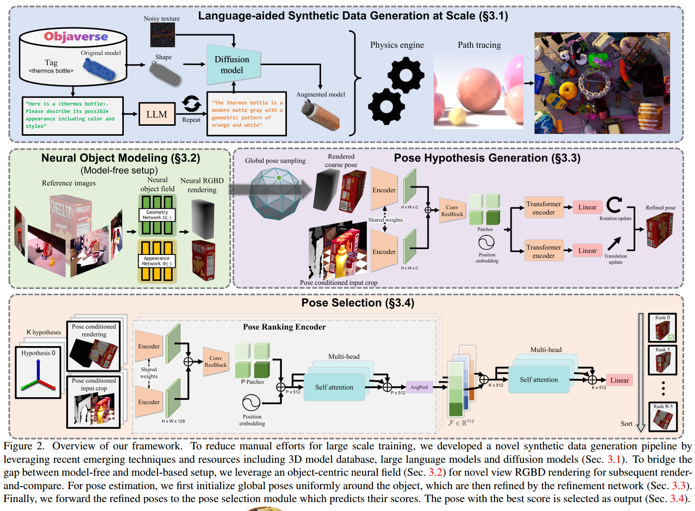
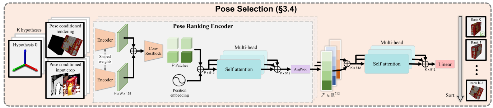
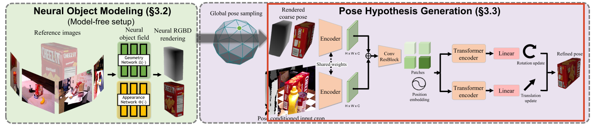

FoundationPose 指南
本文最后更新于 2026年8月1日 晚上
FoundationPose 指南
1. 项目背景
最近使用 FoundationPose 进行 6D 位姿估计：主要是对箱子这类刚体物体估计 6D 位姿，为机器人抓取提供目标位姿。
2. 技术原理
2.1 6D 位姿的定义
6D 位姿由三维旋转和三维平移组成：
其中， 是 旋转矩阵，用于描述箱子的朝向； 是物体坐标系原点在相机坐标系下的位置。机器人结合相机内参和相机—机械臂外参，可将该位姿转换到机器人基座坐标系，生成抓取位姿。
2.2 FoundationPose 原理概述
FoundationPose 是一个面向新物体的 RGB-D 6D 位姿估计与跟踪框架。
其核心特点是：给定目标物体的 CAD 模型，无需针对该物体重新训练；它通过“生成多个位姿假设 → 渲染 CAD → 与真实观测比较 → 迭代精修 → 打分选择”的方式，估计物体相对相机的 6D 位姿。
它也支持没有 CAD 的 model-free 模式，但本文实践使用的是更常见的 model-based 模式。FoundationPose 同时统一了单帧位姿初始化和视频跟踪，输入模态为 RGB-D。

这个overview上面一部分我简单理解成做一个数据的处理与增强。中间是初始帧注册的时候生成多组候选位姿，然后对每个位姿进行渲染crop，和真实观测crop进行比较，经过Refiner网络迭代精修，最后通过Scorer网络选择最优位姿。
后续帧跟踪的时候直接使用上一帧的位姿作为初值，经过Refiner网络迭代精修即可。
2.3 首帧目标检测或分割
首先需要通过 Mask R-CNN、CNOS 或外部模块得到目标的二维区域。官方 demo 直接读取首帧 Mask。该 Mask 主要用于：
- 从深度图中提取物体区域；
- 估计目标初始三维位置；
- 排除大部分背景；
- 限定位姿假设的生成范围。
因此，FoundationPose 并不是真正意义上“什么输入都不需要”的零样本检测。更准确地说：给定目标区域和 CAD 后，它可以对未参与训练的新物体进行零样本 6D 位姿估计。
2.4 平移初始化
FoundationPose 首先在目标二维区域内读取有效深度，并使用其中位数深度估计物体的大致位置：
再结合 Mask 或检测框中心 ：
得到初始平移：
这只是粗略估计，因为 Mask 中可能混入背景或遮挡物深度，也可能包含空洞、飞点；而物体前表面并不等于几何中心。因此，后续仍需利用神经网络精修。论文明确说明，平移初始化来自目标二维区域中的中位数深度。
2.5 生成大量旋转候选
单张图像很难直接确定任意新物体的完整旋转。因此 FoundationPose 不会直接只预测一个全局姿态，而是在物体周围均匀采样一系列相机观察方向。
具体做法如下：
- 在以物体为中心的二十面体球面上均匀采样视点，并让每个虚拟相机朝向物体中心；
- 对每个视点增加若干离散的平面内旋转；
- 将二者组合成大量初始旋转假设。
候选数量大致为：
其中 是球面视点数量， 是每个视点的平面内旋转数量。这些候选共享粗略平移，但旋转不同。
1 | |
这也是大量“候选粗位姿”的来源；它们并非通过传统特征匹配、PnP 或 RANSAC 获得。
2.6 按候选位姿渲染 CAD RGB-D
对于每个候选位姿 ，利用 CAD Mesh 和相机内参渲染：
- RGB 图像；
- 深度图；
- 轮廓或 Mask；
- 法向、XYZ 等内部几何信息。
“渲染 CAD RGB-D”指的是：假设物体确实处于候选位姿 ，从当前相机视角看过去，CAD 模型理论上应呈现的颜色、轮廓和深度。
真实观测记为 、；候选位姿的渲染结果记为：
候选越接近真实位姿，渲染结果通常越接近真实观测。因此，FoundationPose 的本质属于 render-and-compare 范式。
需要注意：渲染深度不是传感器测得的深度，而是候选位姿下 CAD 表面到相机的理论距离：
2.7 Pose-conditioned Crop 是什么？
FoundationPose 不会直接将整张原图和整幅渲染图送入网络，而是为每个候选姿态计算一个专属 Crop。
Crop 中心
将当前候选位姿下的物体原点投影到图像：
该投影点作为 Crop 中心。
Crop 尺度
根据 CAD 模型直径及当前深度，计算物体理论上在图像中占据的大小：
其中 为模型直径， 为候选位姿的深度， 为焦距。论文还会适当放大模型直径，使 Crop 包含目标及其附近上下文。
因此，不同候选姿态对应不同 Crop：
- 候选平移偏左 → Crop 中心偏左；
- 候选平移偏右 → Crop 中心偏右；
- 候选深度较近 → Crop 较大；
- 候选深度较远 → Crop 较小。
这种设计很重要：网络不仅能看出旋转是否正确，还能通过目标在 Crop 中的位置判断平移应如何修正。例如，目标在 Crop 中偏右，说明当前候选中心可能存在偏差，网络可预测向右的平移更新。
2.8 位姿精修网络
对于每个候选位姿，精修网络接收两套 RGB-D 信息：
1 | |
网络比较二者的外观、轮廓、深度、局部结构和空间位置关系。真实图和渲染图分别经过共享 CNN 编码器，随后拼接特征、划分为 Patch，并通过 Transformer 分别预测旋转与平移增量：
然后更新位姿：
论文采用旋转和平移解耦更新，而不是直接预测统一的齐次变换增量。这样平移更新不依赖更新后的旋转，更容易学习。
为什么可以重复精修？
一次精修后，候选位姿会变得更准确。随后使用新位姿重新渲染、重新计算专属 Crop、再次比较真实观测与渲染结果，并预测更小的增量。因此，它是一个迭代过程：
官方 demo 中，首帧估计和跟踪的默认精修次数分别由 est_refine_iter 和 track_refine_iter 控制。
2.9 位姿打分与选择
精修后仍可能存在多个候选：
FoundationPose 使用 Pose Scorer 判断哪个候选与真实观测最一致。它并非简单计算 RGB 像素误差或深度误差，而是使用一个层次化的排序网络。
- 候选内部比较：真实观测 Crop 与该候选的渲染 Crop 输入网络，提取描述对齐质量的特征。
- 候选之间比较：将所有候选特征一起输入自注意力模块，进行相对排序。
最终选择：
这种设计能同时利用形状、纹理和深度的整体匹配趋势。

2.10 完整的首帧注册流程
完整流程可压缩为：
1 | |
一句话概括：FoundationPose 不从图像直接回归唯一位姿，而是先覆盖性地枚举旋转假设，再利用真实 RGB-D 与 CAD 渲染结果之间的差异，对每个候选进行局部精修和全局排序。
3. 跟踪模式
3.1 相比首帧，跟踪模式省略了什么？
首帧使用：
1 | |
后续帧已有上一帧结果 。在相邻帧运动不大的假设下，直接将其作为当前帧初值：
然后只运行精修网络：
1 | |
因此，跟踪模式省略了：
- 球面旋转均匀采样；
- 大量候选的并行渲染；
- 大量候选的独立精修；
- Pose Scorer 的全局候选排序。
官方实现中，首帧执行 register()，后续帧执行 track_one()。论文报告跟踪更快，主要原因就是只需精修单个位姿，不再处理多个全局候选。

这个相当于跑这个紫色部分但是没有很多候选位姿了，用上一帧位姿当作初始位姿，所以跟踪模式会很快。
3.2 跟踪模式的缺点
跟踪本质上是局部优化，假设：
该假设在正常连续视频中通常成立。但如果发生严重遮挡、目标离开画面、深度大面积缺失、目标突然快速旋转、视频跳帧，或上一帧位姿已错误，上一帧位姿就可能离当前真实位姿太远，Refiner 无法通过小范围增量修正回来。
错误会持续传播：
1 | |
这也是用 FoundationPose 传播视频标签时，遮挡片段容易出现明显误差的主要原因之一。
4. Model-free 模式
FoundationPose 还支持没有 CAD 的情况。此时需拍摄少量带已知相机/物体位姿的参考 RGB-D 图像；论文通常使用约 16 张参考图像。基于这些图像，可为目标物体训练一个 object-centric neural field。
该表示包含：
- SDF 几何函数；
- 外观函数；
- 多分辨率哈希编码；
- 颜色和深度监督。
物体表面由 SDF 的零水平集定义：
训练完成后提取纹理 Mesh，用它代替原始 CAD 进行 RGB-D 渲染。之后的候选生成、render-and-compare、Refiner、Scorer 与 Tracking 基本保持一致。
不过，本文实践并未使用这条 model-free neural field 路线，因此简历和面试中不应表述为自己完成了 model-free 建模。
5. FoundationPose 为什么能泛化到新物体？
传统 instance-level 方法通常需要：
1 | |
FoundationPose 则是：
1 | |
主要原因有三点。
5.1 大规模合成训练
论文使用 Objaverse、Google Scanned Objects 等大量 3D 资产，通过 Isaac Sim 生成带 RGB、深度、Mask 和位姿真值的合成数据，并进行形状、材质、相机、光照和场景随机化。
5.2 学习的是比较能力
网络不是记住“某个箱子对应什么位姿”，而是学习“真实观测与某个候选渲染结果之间的差异，对应怎样的位姿增量”。因此，只要新物体可以被正确渲染，就可复用同一个 Refiner 和 Scorer。
5.3 RGB-D 的几何约束
深度提供尺度和表面距离信息，能够减轻仅 RGB 条件下纹理变化、弱纹理和光照变化造成的歧义。
6. 工程限制
6.1 依赖正确的 CAD 尺度
如果 CAD 使用毫米，而程序按米解释：
1 | |
模型渲染尺度会相差 1000 倍，位姿估计自然失效。因此必须统一 CAD 单位、深度单位、输出平移单位和后续 BOP 标注单位。
6.2 依赖相机内参与 RGB-D 对齐
相机内参错误会造成投影偏差：
如果深度没有对齐到 RGB，真实 RGB Crop 与深度结构就不属于同一像素坐标系，会直接影响平移初始化和 render-and-compare。
6.3 首帧依赖可靠的 Mask
Mask 中混入背景会污染中位数深度；Mask 缺失较多则无法准确描述目标范围。
6.4 对称物体仍存在多解
对于旋转后几何和外观不变的物体，可能有：
不同位姿可能渲染出几乎相同的 RGB-D。FoundationPose 可以选出一个与观测匹配的姿态，但无法凭空区分物理上不可观测的对称分支。
6.5 遮挡会影响标签传播
严重遮挡会导致：
- 可比较的目标区域减少；
- 深度中混入遮挡物；
- 渲染与观测的差异不再主要来自位姿误差；
- 跟踪器从错误位姿继续传播。
这正是将 FoundationPose 用于长序列自动标注时最需要防范的问题。
7. 总结
FoundationPose是一个泛化性很好的6D估计算法，毕竟是大规模数据训练然后精度也很高，但是如果是要求亚像素或者高精度的应用场景，可能还需要对估计结果进一步优化。而且，就实时性来说，尽管有跟踪模式可以大大提高速度，但是帧率仍然不够高，可能无法满足实时抓取的要求。